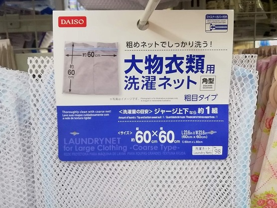

※ 人馴れしていない外猫ちゃんは入れて来なくても大丈夫です。

十分に慣れていて抱っこが出来る猫ちゃんは写真の様な洗濯ネットに入れて来て頂けると大変助かります。
理想的な洗濯ネットの条件は２つ
１．目が粗く、中の猫ちゃんの様子を外から確認出来る物
２．猫ちゃんを入れても十分ゆとりのある大きさがある
です。
100均ならどこでも手に入ります。写真は見本ですが、この位の目の粗さと大きさがあれば十分です。